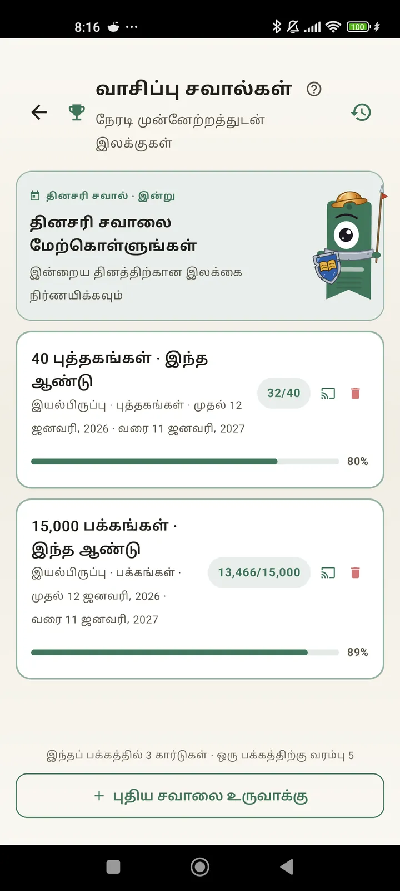

ஒரு வாசகராக உங்களை அறிந்துகொள்ளுங்கள்
சவால்கள், Bingo, விட்ஜெட்டுகள் மற்றும் உங்கள் வாசிப்பைச் சிறப்பாக்கும் மேலும் பல அம்சங்கள். 3.7-ல் புதியது: சவால்கள் மற்றும் Bingo விட்ஜெட்டுகள்.

வாசிப்பு சவால்கள்
பக்கங்கள், தொடர்ச்சிகள் அல்லது வகைகள் வாரியாக இலக்குகளை அமையுங்கள். இலவசமாக 15 செயலில் உள்ள சவால்கள் வரை, Pro-வில் வரம்பில்லை. கூடவே, வரம்பில் சேராத தனிப்பயனாக்கக்கூடிய தினசரி சவாலும் உண்டு.

தினசரி சவால்
ஒவ்வொரு நாளும் ஒரு புதிய இலக்கு. உங்கள் தொடர்ச்சி நிற்காமல் இருக்க நள்ளிரவுக்குள் சவாலை முடியுங்கள்.

வாசிப்பு Bingo
ஒவ்வொரு மாதமும் கருப்பொருள் கட்டங்களுடன் இரண்டு புதிய Bingo. வரிசைகள், நெடுவரிசைகள் அல்லது முழு அட்டையையும் முடியுங்கள்.

வாராந்திர சுருக்கம்
ஒவ்வொரு திங்களும் உங்கள் வாரத்தின் ஒரு பார்வை: படித்த பக்கங்கள், மொத்த நேரம், தொடர்ச்சி, முந்தைய வாரத்துடன் ஒப்பீடு.

மாதாந்திர மறுபார்வை
ஒரு மாதம் முடியும்போது Lecturameter அதைச் சுருக்கித் தருகிறது: பக்கங்கள், நேரம், முடித்த புத்தகங்கள், நாள்தோறும் உங்கள் வேகம் மற்றும் மாதத்தின் புத்தகம்.

Bingo விட்ஜெட் Pro
இந்த மாதத்தின் Bingo அட்டை, எப்போதும் கண்முன்னே, நீங்கள் முடித்த கட்டங்களும் அமைத்த வரிசைகளும் உடன்.

புத்தக விட்ஜெட் இலவசம்
நீங்கள் வாசிக்கும் புத்தகத்தை முகப்புத் திரையிலேயே பாருங்கள்: அட்டை, தலைப்பு, ஆசிரியர், பக்கங்கள், முன்னேற்ற சதவீதம், எப்போதும் புதுப்பிக்கப்பட்டு. நீங்கள் விரும்பும் இடத்துக்குப் பொருந்த அளவை மாற்றலாம்.
உண்மையாகவே நண்பா, இந்தச் செயலி ஒரு சிகிச்சை மாதிரி இருக்கு. நாளுக்கு ரெண்டு பக்கம் படிச்சுட்டு இருந்த நான் இப்போ 20 பக்கம் வரை படிக்கிறேன், இன்னும் முன்னேறிட்டு இருக்கேன்பயனர் கருத்து, மின்னஞ்சல் மூலம் அனுப்பப்பட்டது

மாதாந்திர ஒப்பீடு Pro
செயலியைத் திறக்காமலேயே சமீபத்திய மாதங்களின் ஒரு விரைவுப் பார்வை. ஒவ்வொரு மாதத்தின் பக்கங்களுக்கும் பட்டைகள், நடப்பு மாதம் முன்னிலைப்படுத்தப்பட்டு, கடந்த மாதத்தை விட இந்த மாதம் நன்றாகவா மோசமாகவா என்று ஒரே பார்வையில் தெரியும்.

சவால்கள் விட்ஜெட் Pro
உங்கள் செயலில் உள்ள சவால்களும் அவற்றின் முன்னேற்றமும் முகப்புத் திரையில். எவற்றைக் காட்ட வேண்டும் என்பதை சவால்கள் திரையில் தேர்ந்தெடுங்கள்.